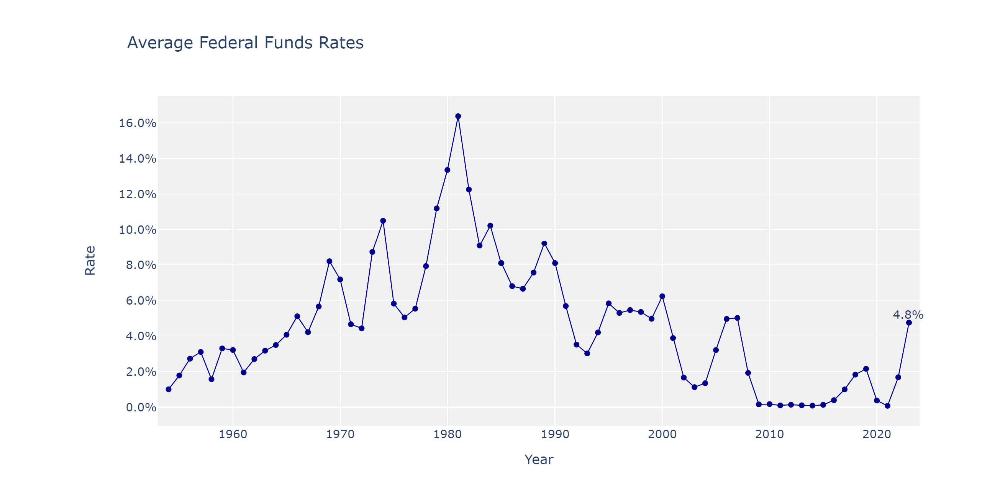

Understanding the US Federal Funds Rate is key to decoding the nation's economic history. This critical interest rate, set by the Federal Reserve, impacts every aspect of the economy, from consumer spending to business investment. Let's embark on a journey through the history of the Federal Funds Rate, from the post-war boom in the late 1950s to the recent challenges of the COVID-19 pandemic.
In the late 1950s and early 1960s, the US was enjoying the fruits of post-WWII economic growth. The Federal Funds Rate was kept low, promoting consumption and investment. This golden era of prosperity was a testament to the US's leadership in the global economy.
The tide turned in the late 1960s, with the US economy experiencing the dual challenges of stagnation and inflation - a phenomenon known as "stagflation". To combat this, the Federal Reserve, under Chairman Paul Volcker, increased the Federal Funds Rate. This monetary policy action led to a recession in the early 1980s but ultimately curbed inflation.
From the mid-1980s to the early 2000s, the Federal Funds Rate generally followed a downward trend. This period, known as the "Great Moderation", was marked by stable economic growth, controlled inflation, and low unemployment. The Federal Reserve strategically adjusted the Federal Funds Rate, demonstrating the power of monetary policy in maintaining economic stability.
The dot-com bubble burst in the early 2000s led to a swift reduction in the Federal Funds Rate. This move by the Federal Reserve, then under Chairman Alan Greenspan, showcased the institution's role in mitigating the impacts of economic downturns.
The 2008 financial crisis, one of the severest economic downturns since the Great Depression, prompted the Federal Reserve to lower the Federal Funds Rate to nearly zero. This move aimed to stimulate the economy by making borrowing cheaper, encouraging spending and investment.
In the post-2008 period, the Federal Reserve maintained the Federal Funds Rate near zero to support economic recovery. As the economy improved, the rate was gradually increased from 2015 onwards. However, the onset of the COVID-19 pandemic in 2020 led to another rate cut.
Looking ahead, the Federal Funds Rate will continue to be a critical tool in the Federal Reserve's arsenal to steer the US economy. The future direction of this crucial interest rate will depend on a variety of factors, including economic indicators, global economic conditions, and policy decisions by other central banks and governments. Through our understanding of its past, we can better anticipate the future path of the Federal Funds Rate and its implications for economic growth and stability.